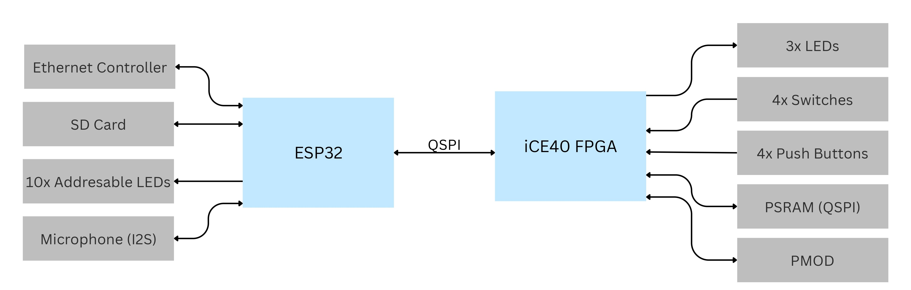
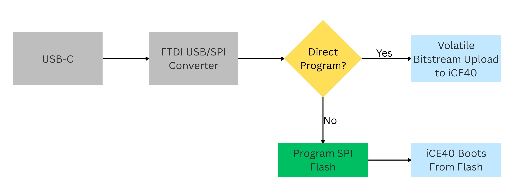

Electrical & Computer Engineering
KC-FPGA Board
This was a personal project that me and my friends started over the summer. We wanted to make an FPGA devboard that we could use to
develop and test our own RTL designs. We decided to implement various peripherals on the board to make it similar to the FPGA boards
we used in our courses. Also, we added an ESP-32 microcontroller for more flexibility in the types of projects we could work on. KC-FPGA board
stands for 'Kinda Cool FPGA Board.'
So far, we have completed the schematic design, and we are currently working on the PCB layout. After that, we'll go through a design
review to make sure we don't have any mistakes, and then we'll order the PCBs and do board bring-up.
View the project on GitHub.
System Block Diagram

Features
The KC-FPGA board features a lot of peripherals that are commonly found on FPGA development boards. There are different peripherals connected to the iCE40 and the ESP32. Since the iCE40 has only 5k LUTs, we avoided using complex peripherals on the iCE40 that would use so many LUTs. Instead, we used the ESP32 for these types of peripherals.
iCE40
- 10 addressable LEDs
- 4 push buttons
- 4 switches
- PSRAM
- PMOD Header
- Expansion Header
ESP32
- W5500 Ethernet Controller
- SD Card Slot
- I2S Audio Input
- 10 addressable LEDs
- Expansion Header
Programming the FPGA
The KC-FPGA board supports two FPGA programming methods, both through the onboard FTDI USB-to-SPI converter. The first uploads the bitstream directly to the FPGA over USB-C, this method is volatile so the bitstream is lost when the board is powered off. The second programs an external SPI flash chip through the same FTDI chip, and the FPGA then boots from that flash on power-up. This method is non-volatile so the bitstream is retained when the board is powered off. Both paths are shown in the block diagram below.

Power
Power comes in over USB-C at 5V and steps down to 3.3V through a buck converter. That 3.3V rail feeds the iCE40's I/O bank and the ESP32. A separate 3.3V-to-1.2V LDO feeds the iCE40's core, which runs at a lower voltage than its I/O.
Next Steps
We're currently working on the PCB layout. From there, the plan is to send the board out for fabrication and assembly, then move into bring-up and testing.